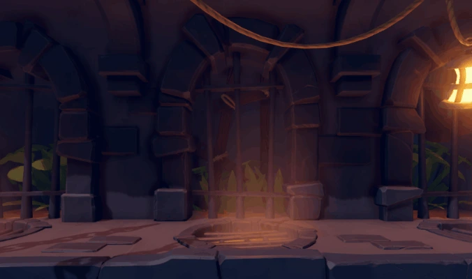
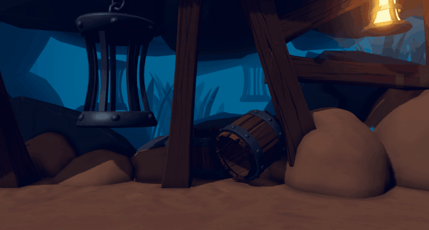

Dung Slinger
Godot · GDScript
Dung Slinger is a 2D physics platformer where the player is chained to a ball. It was developed by Bold Beetle Games UG (haftungsbeschränkt), where I worked during my mandatory internship at the S4G School for Games.


About the Game
Dung Slinger is a physics-based platformer about a dung beetle chained to a dung ball. The challenge lies in using the ball to move both the beetle and the ball through the level.
The Project
Dung Slinger was developed by Bold Beetle Games UG (haftungsbeschränkt). I worked on the project during my 10-week mandatory internship at the S4G School for Games.
Tools
Development:
- Godot
- GitHub Desktop
Management:
- Trello
Responsibilities
During my internship I was responsible for general coding tasks, but I also had three major assignments. My first task was to develop a 3D UI system for menus with dolly cameras. My second task was to create a prototype for a player replay system, where the player’s actions are recorded and a ghost is replayed in the next run. My third and most important task was integrating multiplayer functionality, where a second player can join during the game. Each player is chained to their own ball, and both balls are chained together.
Learnings
Since this was my first time working with other programmers on a larger project, my biggest challenge was familiarizing myself with and understanding code written by others, as well as adapting my coding style to match theirs. Through this experience, I was once again reminded of the importance of writing clean and consistent code, documenting it properly, and communicating clearly within the team.